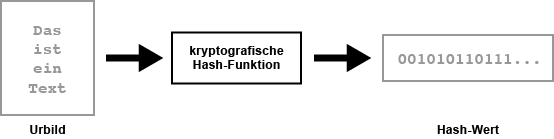
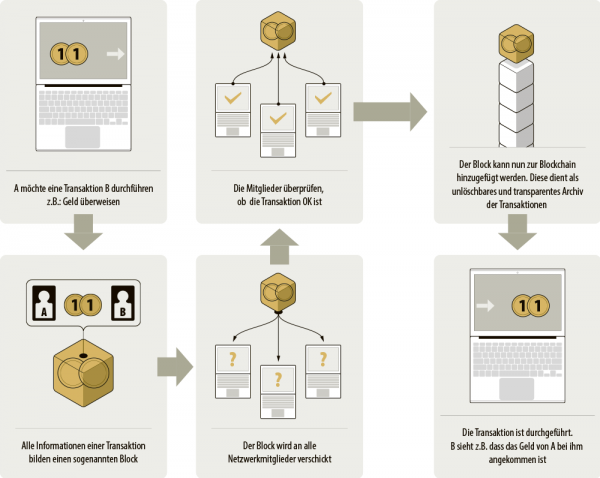
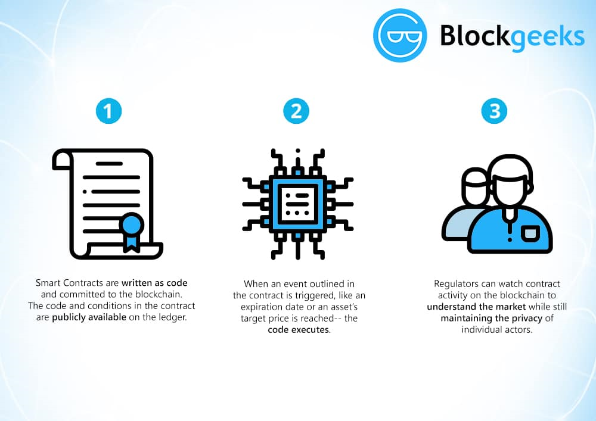

Die Caesar Verschlüsselung ist eine von den Römern etwickeltes System, die Nachrichten inhalte zu verschlüsseln.
Sie funktioniert mit dem Verschieben der Stellung im Alphabet.
Leider ist die Caesar verschlüsselung nicht sehr sicher und kann spätestens nach 26 versuchen entschlüsselt.
Die entschlüsselung kann aber massiv beschleunigt werden, da es für jeden Buchstaben eine Häufigkeit hat, wie häufig er in einem Text vorkommt. Dies kann aber auch auf die verschlüsselte Version des Textes angewendet werden. So hat man bei längeren Texten eine sehr gute Wahrscheinlichkeit es beim ersten Versuch das ganze beim ersten Versuch lesbar zu entschlüsseln.
Es ist ein systematisches Verschlüsselungsverfahren zur geheimen Nachrichtenübermittlung. Es wird ein Schlüssel verwendet, dass so lang wie die Nachricht ist. Es gehört zu den polyalphabetischen Substitutionsverfahren, dass heisst ein Buchstabe (oder ein Zeichen) wird in einen anderen Buchstaben (oder Zeichen) umgewandelt.
Der Einmalschlüssel muss:
Hier ein Beispiel dazu:
Angenommen ‘A’ verschlüsselt die Nachricht “BADEN” mit dem Key “FVOYY”. Code:
Die verschlüsselte Nachricht ‘GVRCL’ wird an Person ‘B’ geschickt, welcher den Schlüssel kennt und mit Python einfach entschlüsseln kann. Funktion:
Nachricht wird aber von einer Drittperson abgefangen, die den Schlüssel jedoch nicht kennt. Um den Text zu entschlüsseln, entschlüsselt sie ihn mit jedem möglichen Schlüssel.
Dabei gibt es 26^5= 11 881 376 mögliche Schlüssel, also gibt es auch genauso viele Lösungen. Es gibt mehrere Lösungen die Sinn ergeben. Da die Drittperson auch nicht Weiss auf welcher Sprache die Nachricht geschrieben wurde, gibt es nur noch mehr Sinnvolle Lösungen. Sie benutzt den selben Python-Code wie Bob:
Wie man sieht kann die Drittperson nicht wissen welche Lösung jetzt richtig ist und somit ist OTP sicher.
Wenn jetzt ‘A’ den gleichen Key ‘FVOYY’ nochmals verwendet, um zum Beispiel das Wort ‘SPORT’ zu verschlüsseln, kann die Drittperson die beiden Stings aneinanderhängen, bevor sie alle möglichen Schlüssel ausprobiert. Dadurch erhält sie weniger Lösungen die Sinn ergeben. Aus beiden Nachrichten kann also ein sinnvoller String entstehen, wodurch die Drittperson den Key finden kann und somit auch beide Nachrichten entschlüsseln kann. Die mehrfache Nutzung eines Schlüssels erlaubt also die vereinfachte Entschlüsselung-> nicht mehr sicher.
Man schliesst sein Fahrrad an einem neutralem Ort ab und geht weg. Anschliessend kommt die andere Person und schleisst das Velo zusätzlich mit seinem eigenen Schloss ab und geht wieder weg. Anschliessend geht der Verkäufer wieder zurüch und entfernt sein Schloss. So hat der Käufer sein Fahrrad nur noch durch sein eigenes Schloss verschlossen.
Die Antwort lautet nein. Das Problem liegt darin, das wenn man eine Nachricht verschlüsselt, sie and die andere Person verschlüsselt, sie die Nachricht zusätzlich verschlüsselt und wieder zurüchschickt kann die "Man in the Middle"-Person den Key der zweiten Person herausfinden.
Bitte gib eine einen String mit maximal 6 kleingeschriebene Zeichen länge.
Nun hat die erste Person die Nachricht verschlüsselt und reicht die Nachricht an die zwite Person weiter. Es gibt allerdings noch die Person in der Mitte, die auf keinen Umständen die Nachricht lesen sollte, aber sie fängt die erste Nachricht ab.
Anschliessend verschlüsselt Person 2 die Nachricht zusätzlich meit seinem Schlüssel und schickt es wieder zurück an Person 1. Aber auch diese Nachricht wird von der Person in der Mitte abgefangen.
Jetzt ist die Nachricht ja schon übermittelt und man muss nur noch einen zweiten Key generieren.
Nun teilt die erste Person die doppelt verschlüsselte Nachricht durch den eigenen Schlüssel und schickt die einfach verschlüsselte Nachricht zurück an die 2. Person. Natürlich wird diese Nachricht auch von einem Mittelmann abgefangen.
Nun kommt der finale Schritt: Die zweite Person nimmt die erneut übermittelte Nachricht und teilt und es durch den eigenen Schlüssel. Somit bekommt die Person die Nachricht und sowohl der Schlüssel noch der unverschlüsselte Text übermittelt.
Jetzt hat aber die Person in der Mitte sowohl die einfachverschlüsselte Text, als auch den doppelt verschlüsselten Text. Wenn jetzt die Person in der Mitte den doppelt verschlüsselten Text, durch den einfachverschlüsselten Text teil, bekommt er den zweiten Schlüssel. Der Mittelmann kann aber noch nicht die finale Nachricht entschlüsseln, da er den ursprüngliche Verschlüsselung noch nicht kennt.
Jetzt ist es ein leichtes, die Nachricht, die als letztes versendet wurde zu nehemn und durch den Schlüssel teilen.
Somit ist klar bewiesen, das diese Verschlüsslungsmethode wegfällt, da es ohne grossen Aufwand von einer unabhängigen Partei entschlüsselt werden kann.
Die Verschlüsselung ist nun wie bewiesen nicht nützlich, aber kann man etwas daraus rausziehen, das man für eine neue Verschlüsselungsmethode weiterverwenden können?
Ja, definitiv. Es hat sehr gute Ansätze, hautsächlich nähmlich das die Schlüssel immer bei der Person bleiben und nie übertragen werden muss. Aber wie funktioniert eine Verschlüsselung, die auf dem gleichen Prinzip funktioniert, aber nicht die Schlüssel ohne weiters freigibt?
Der Bitcoin, welche die erste Blockchain ist, wurde als digitales Geld entworfen. Da sie eine dezentrale Datenbank ist, kann sie in der Regel von jedem Netzwerkteilnehmer gespeichert werden. Zwischen den Teilnehmern im Netzwerk ermöglicht die Blockchain eine Peer-to-Peer-Zahlung.
So werden Computernetzwerke bezeichnet, bei deren mehrere Computer miteinander verbunden sind und zusammenarbeiten können. Die Computer versorgen sich gegenseitig mit Dateien, Diensten und Funktionen. Die Computer können unterschiedlich aufgeteilt sein. Entweder können sie völlig gleichberechtigt oder in Gruppen mit unterschiedlichen Berechtigungen sein. So gibt es also keinen zentralen Server und ist somit ein dezentrales Netzwerk. Die Vorteile der dezentralen Netzwerke, also auch dem Peer-to-Peer-Netzwerk sind, dass sie weniger anfällig für Totalausfälle sind sowie ist es schwieriger, das Netzwerk durch externe Angriffe zu deaktivieren.
Die mobilen Zahlungen über das Smartphone sind also Peer-to-Peer-Zahlungen. Konkret geht es um den sofortigen Transfer meist kleinerer Beträge, von Privatperson zu Privatperson, von Handy zu Handy. Zum Beispiel innerhalb des Freundeskreises oder in der Familie. Doch dies war bisher nicht möglich. Wenn sich Menschen gegenseitig nicht vertrauen, lassen sie sich wichtige Vereinbarungen von einer dritten Partei bestätigen. Als Beispiel dafür gilt das Banksystem. Bei einer Transaktion von A nach B, zieht die Bank den Betrag vom Konto von A ab und addiert ihn auf das Konto von B. Doch dies funktioniert nur, wenn die Beteiligten sich auf die Bank verlassen. Sobald die Bank in Konkurs geht oder gehackt wird, kann man sich nicht mehr darauf verlassen, dass bei den richtigen das Geld abgezogen und bei den richtigen das Geld addiert wird. Bei den Bitcoins jedoch, wenn sie Bitcoins und die privaten Schlüssel haben, ist das Kapital allein ihres. Für die Ausführung von Transaktionen sind spezielle Netzwerkknoten verantwortlich. Diese Aufgabe kann von jedem übernommen werden. Wenn einer dieser Knoten ausfällt und aus irgendwelchen Gründen eine Transaktion nicht ausführen kann, kann diese Aufgabe von jedem übernommen werden. So kann also die Blockchain mächtige Dritte eliminieren. Ein blindes Vertrauen ist unnötig und der Benutzer hat die volle Kontrolle. Diese vertrauens-unabhängige Darstellung des Eigentums kann nicht nur auf Geld angewendet werden. Über die Blockchain können so genannte Token übertragen werden. Ähnlich wie Aktien, die nur ein Stück Papier sind, aber einen Teil eines Unternehmens repräsentieren, können Token alles repräsentieren.
Hash-Funktionen sind ein wichtiges kryptographisches Instrument und bilden einen eigenen Bereich in der Kryptographie.
Eine Dualzahl aus einem als Vorabbild bezeichneten Datensatz wird im Prinzip durch eine Hash-Funktion erzeugt, welche üblicherweise in hexadezimaler Notation dargestellt wird. Dies wird als Hash-Wert bezeichnet. Wie lange diese generierte Zeichenkette dann ist, hängt allein von der Hashfunktion ab.
Die Besonderheit einer kryptographischen Hash-Funktion ist die Einwegfunktion. Sie ist sehr einfach zu berechnen, allerdings ist die Umkehrung sehr komplex und grundsätzlich unmöglich. Dies kann auch wieder mit dem Fingerabdruck von einem Menschen verglichen werden. Das Aussehen eines Menschen ist nicht durch ihren Fingerabdruck ableitbar. Auch wenn zwei Menschen sich ähnlichsehen, können sie einen komplett anderen Fingerabdruck haben. Die Umkehrung vom Hash-Wert in das Originalbild soll verhindert werden.

Mit Hashfunktionen kann man effizient Daten miteinander vergleichen, genauso wie man zwei Menschen mit ihrem Fingerabdruck vergleichen kann.
In einem Block werden die Daten einer Transaktion (es muss sich dabei nicht um Geld handeln) zusammengefasst. Um zu verhindern, dass die gleichen Bitcoins zweimal ausgegeben werden, müssen die Computerserver im Netzwerk sich einigen, dass die Transaktion gültig ist. Nur wenn die Transaktion gültig ist wird ein neuer Block (Transaktionsblock der Kette) an Blöcke (also die Blockchain) angehängt. Sobald dieser Schritt gemacht wurde, kann er nicht mehr rückgängig gemacht werden.
Dies kann man mit einem Gruppenchat vergleichen; Alice, Bob und Lisa haben sich zusammen um 14:00 Uhr im Park verabredet. Diese Information ist nun nach dem Absenden auf jedem Handy im Chat gespeichert. Wenn Lisa sich aber erst um 16:00 Uhr im Park treffen möchte, kann sie diese Entscheidung nicht allein treffen und sie kann auch nicht im Chat die Nachricht nachträglich ändern. Wenn Lisa das also nicht mit den anderen von vorne plant, steht sie um 16:00 Uhr allein im Park. Dies ist gleich mit den Blockchains. Der Kern der Blockchain ist, dass niemand nachträglich noch etwas bearbeiten kann. Den in der Blockchain werden auch Information in einem Verlauf gespeichert, welche dann je einen Block darstellt. Für jeden Block wird ein Hash, also sozusagen ein digitaler Fingerabdruck berechnet. Jeder Block erhält auch den Hash des vorherigen Blockes. Die Blöcke werden über die Hashes zu einer Kette verbunden. Da diese Hashes nicht rückgängig gemacht werden können, ist es ähnlich wie bei einem Chatverlauf, wo man die Informationen nachher nicht mehr verändern kann.
Würde sich jetzt jedoch eine Information/ Block verändern, würde sich auch der dazugehörige Hash verändern und die Kette/ Blockchain würde Zerfallen.
Selbstausführende Verträge, welche auf Computerprotokollen aufbauen, werden smart contracts (intelligente Verträge) genannt. Sie sind auf der Blockchain-Technologie aufgebaut und sozusagen digitale Verträge. Die Bedingungen der Vereinbarung zwischen Käufer und Verkäufer dieser Verträge wird direkt in Codezeilen geschrieben, welche über ein verteiltes, dezentrales Netzwerk bestehen. Die smart contracts machen alle Transaktionen nachvollziehbar, irreversibel und transparent.
Doch wie funktioniert diese smart contracts?
Bei einem normalen Vertrag müssen beide Parteien mit dem Vertrag einverstanden sein. Wenn Bob also ein neues Auto kaufen will, stehen im Kaufvertrag alle Bedingungen, welchen Bob zustimmen muss, um das Auto zu kaufen. Jedoch muss auch der Autoverkäufer diesen Bedingungen zustimmen. Im Vertrag sind auch die Informationen enthalten, wieviel Bob für das Auto zahlen muss und was er dafür bekommt. Diese Verträge sind üblich nicht digital und werden schriftlich ausformuliert. Die smart contracts enthalten die gleichen Informationen wie die normalen Verträge, mit dem Unterschied, dass die Vertragsinformationen im Programmcode des smart contracts festgelegt werden. Der Grundsatz «Code is law» gilt dabei. Der Autoverkäufer kann also zum Beispiel durch ein solcher smart contract festlegen, dass Bob das Auto erhält, wenn er einen bestimmten Betrag bezahlt hat. Sie erhaten also sogenannte Wenn-Dann-Regeln. Wenn de Bedingung, welche im Vertrag festgelegt wurde, erfüllt wurde, löst dies automatisch Konsequenzen aus. Das bedeutet, dass festgelegte Aktivitäten, um die Willensbekundung des Vertrages zu verwirklicheen, automatisch ausgeführt werden, wenn ein gefordertes Ereignis eintritt. Auch werden bei alle Statusänderungen alle Parteien in Echtzeit darüber informiert. Einige Vorteile eines smart contracts sind also beispielsweise, dass sie sehr verlässlich sind, wenn sie korrekt programmiert wurden. Auch sind sie sehr sicher, wenn sie auf Basis einer Blockchain programmiert wurden. Sie benötigt auch weniger Zeit, so sparen die Vertragspartner an Zeit und Geld. Zur Verifikation eines Vertrages dient die unveränderliche Blockchain. Somit ist ein smart contract unabhängig und benötigt keine Dritt-Partei. Jedoch gibt es auch Nachteile, den vollständig ausgereift ist das Konzept der digitalen Verträge noch nicht. Wenn beispielsweise der Programmcode fehlerhaft ist, kann dies schwerwiegende Folgen haben, da die Blockchain unveränderlich ist. So konnte ein Hacker am 17. Juni 2016 50 Millionen US-Dollar erbeuten.
Created by Arianita Nuhiu, Anja Kyra Meyner and Dominik Keller
Copyright belongs to Arianita Nuhiu, Anja Kyra Meyner and Dominik Keller
Github Repository